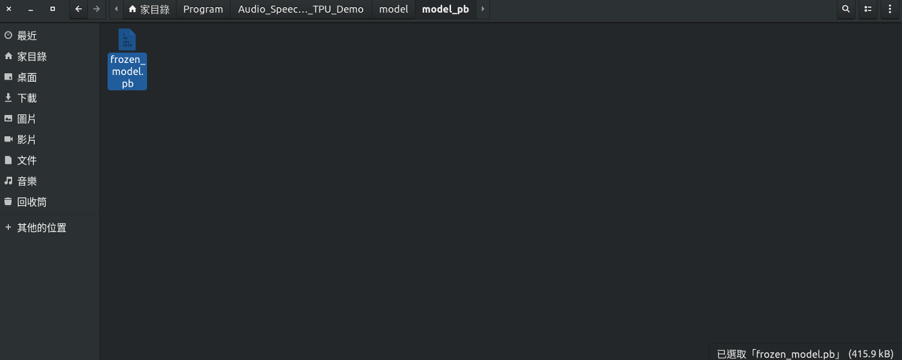
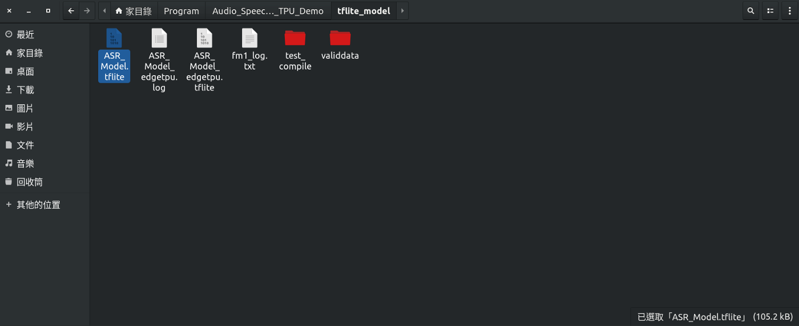
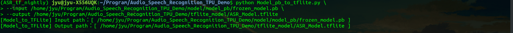
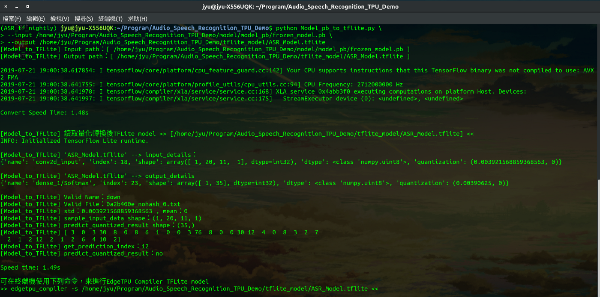
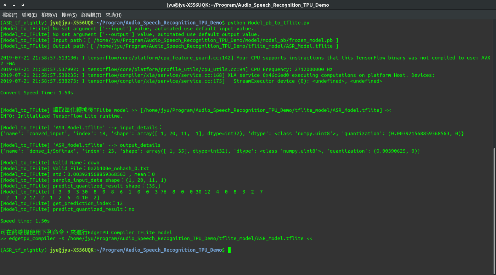

使用EdgeTpu應用在語音模型預測之簡單實例(四)-模型轉換格式為tflite
2019-07-20 16:00:00
2019-07-20 16:00:00
GitHub：https://github.com/s123600g/asr_edgetpu_demo
經過(三) 建立模型與訓練，此階段進行將模型轉換成 tflite 模型，產生可以用在(五) 使用 edgetpu_compiler 轉換 EdgeTpu 可識別 tflite模型。
此階段所使用程式為Model_pb_to_tflite.py。
程式內部一些必要參數配置，存放在Config.py裡面，如需更改請到Config.py內找尋對應參數配置進行修改。
轉換之前在專案目錄內model/model_pb/frozen_model.pb模型大小為415.9kB

轉換成tflite模型tflite_model/ASR_Model.tflite大小為105.2kB

執行程式分為兩種方式：
1. 指定輸入來源位置與輸出位置
python Model_to_TFLite.py --input 來源位置--output 輸出位置
範例：
python Model_pb_to_tflite.py \
--input /home/jyu/Program/Audio_Speech_Recognition_TPU_Demo/model/model_pb/frozen_model.pb \
--output /home/jyu/Program/Audio_Speech_Recognition_TPU_Demo/tflite_model/ASR_Model.tflite


2. 不指定輸入來源位置與輸出位置，自動抓取 Config.py 內部設置
python Model_pb_to_tflite.py

Config.py內部設置如下：
輸入來源位置：
Model_PB_DirectoryName = "model_pb"
Model_PB_Name = "frozen_model.pb"
Model_PB_Path = os.path.join(os.getcwd(), Model_DirectoryName, Model_PB_DirectoryName, Model_PB_Name)
輸出位置：
Input_Model_Path = os.path.join(os.getcwd(), "model")
Output_Model_Name = "ASR_Model.tflite"
Output_Model_Path = os.path.join(os.getcwd(), "tflite_model", Output_Model_Name)
程式執行步驟：
Step 1. 讀取上一階段建立模型與訓練所產生pb模型
在專案目錄內model/model_pb/frozen_model.pb
須注意！在這裡使用的模型必須經過量化才可進行轉換。
Step 2. 設置權重型態轉換為 uint8，並取得讀取模型輸入層名稱，進行轉換模型為tflite格式模型，並輸出轉換後tflite模型
Step 3. 讀取轉換後 tflite 模型進行測試預測
使用測試資料集為專案目錄內tflite_model/validdata/down/0a2b400e_nohash_0.txt
使用分類標籤資料庫為專案目錄內DB/class.db3
在Config.py內關於SQLite3配置
# 放置SQLite3 DB檔案目錄名稱
SQLite_DB_DirectoryName = "DB"
# SQLite3 DB檔案
SQLite_name = "class.db3"
# SQLite3 資料表名稱
db_TableName = 'audioclass'
# SQLite3 資料表欄位名稱
column_ClassNum = 'ClassNum'
# SQLite3 資料表欄位名稱
column_Classname = 'ClassName'
到目前為止針對模型轉換格式為tflite，我們已將pb模型轉換為tflite模型，接下來就可以進行(五) 使用 edgetpu_compiler 轉換 EdgeTpu 可識別 tflite模型。